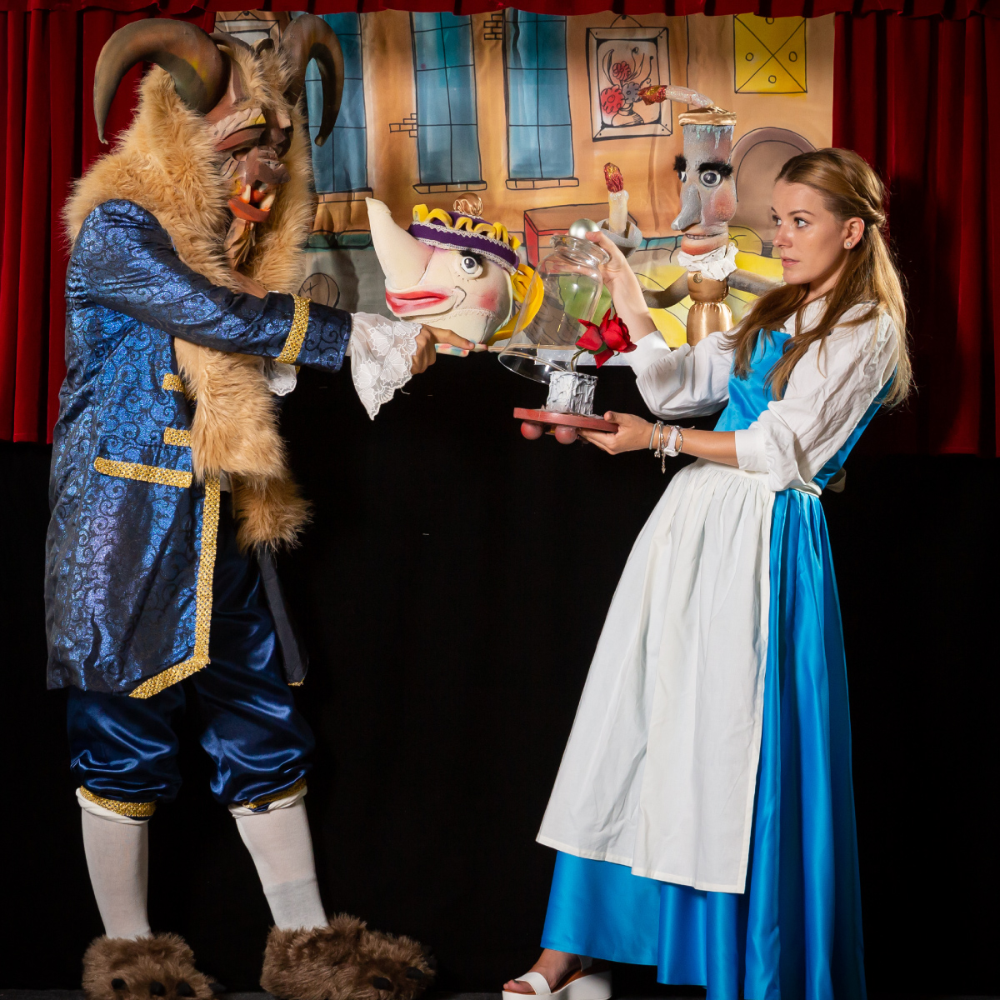
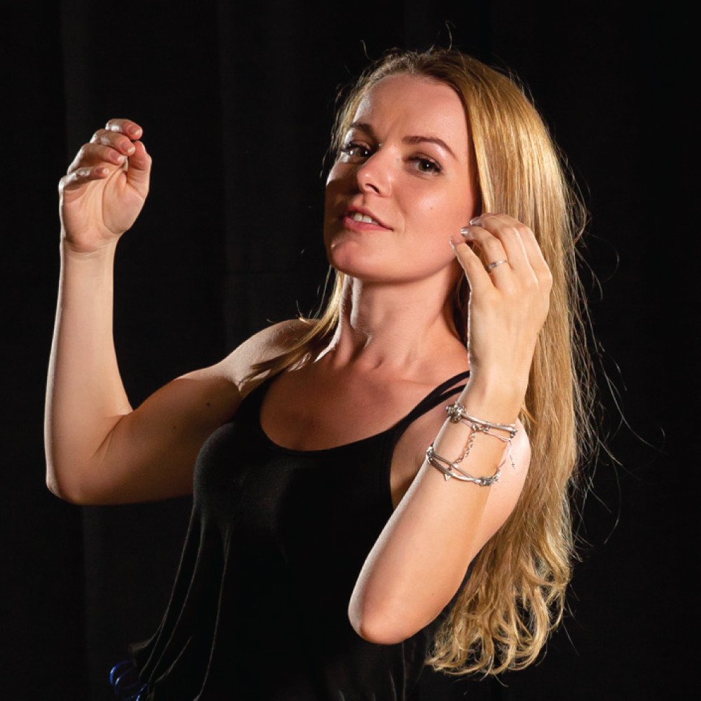

„Teatrul Copilăriei” este un concept unic, creat în 2014 de doi actori profesioniști cu scopul de a participa la procesul educativ al copiilor prin spectacole cu păpuși și marionete.
Am pornit în 2014, cu o convingere simplă: spectacolul pentru copii nu este ceva facil. Copiii merită aceeași rigoare artistică, aceleași decoruri lucrate cu grijă și aceeași emoție autentică ca orice public de teatru.
De atunci, am construit un repertoriu de peste 25 de spectacole, am interpretat peste 100 de personaje și am adus povestea la peste 1000 de petreceri și evenimente. În timpul anului școlar suntem prezenți în școli și grădinițe, iar în weekenduri și vacanțe — pe scene, la festivaluri și la evenimentele familiilor care ne cheamă.


Îmi doresc să schimb mentalitatea că spectacolul pentru copii este ceva facil.
O interpretare captivantă, regizată cu măiestrie de buzoianul Octavian Ghinea.
Atmosfera de basm este creată cu mijloacele moderne ale teatrului de animație.